Galeria: Imagens do Cerrado
O Cerrado é um bioma de contrastes e belezas singulares. Esta galeria foi criada para mostrar a riqueza visual do nosso bioma, revelando suas paisagens únicas, sua fauna incrível e a diversidade de plantas que fazem do Cerrado um dos patrimônios naturais mais importantes do planeta.
Explore as imagens abaixo e conheça um pouco mais sobre esse tesouro brasileiro que precisa ser valorizado e protegido.
Flora do Cerrado
O Cerrado abriga milhares de espécies vegetais, muitas das quais só existem nesse bioma. Árvores tortuosas, flores coloridas e frutos nativos formam paisagens surpreendentes.
Ipê-amarelo e ipê-roxo
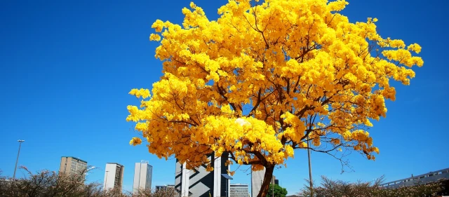O ipê-amarelo floresce no início da estação seca e colore o Cerrado com tons vibrantes. É uma das árvores mais simbólicas do Brasil.
Pequi
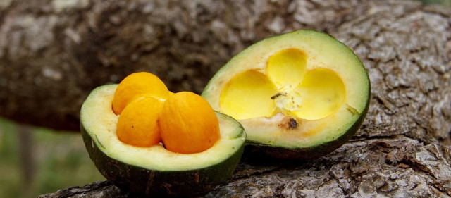O pequi é um fruto típico do Cerrado, rico em sabor e cultura. Muito usado na culinária regional, exige cuidado para ser consumido por causa de seus espinhos internos.
Buriti
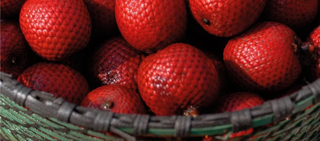Encontrado em áreas úmidas, o buriti é uma palmeira essencial para o equilíbrio ecológico das veredas. Seus frutos são aproveitados na alimentação e na produção de óleo natural.
Flor do Cerrado (como a Sempre-viva)
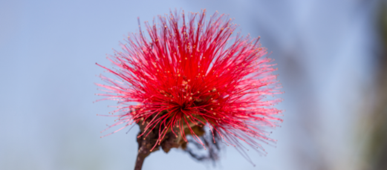As sempre-vivas recebem esse nome porque mantêm sua beleza mesmo após secas. São símbolos da resistência da flora do Cerrado.
Fauna do Cerrado
A diversidade de animais do Cerrado é impressionante. Mamíferos, aves e répteis convivem em equilíbrio com a vegetação. Muitos deles estão ameaçados de extinção.
Lobo-guará
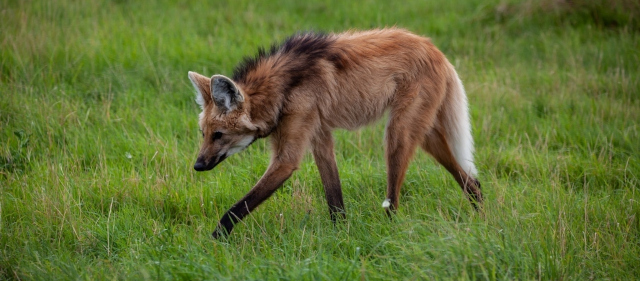O lobo-guará é o maior canídeo da América do Sul. De hábitos solitários, é um símbolo da fauna do Cerrado e está ameaçado de extinção.
Tamanduá-bandeira
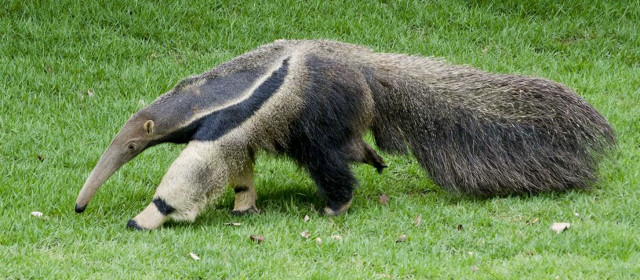Com sua longa língua pegajosa, o tamanduá-bandeira se alimenta de formigas e cupins. É um dos animais mais curiosos do bioma.
Tatu-canastra
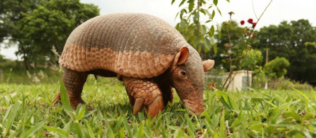O tatu-canastra pode atingir até 1,5 metro de comprimento. Raro e discreto, é um dos animais mais difíceis de se avistar na natureza.
Arara-azul
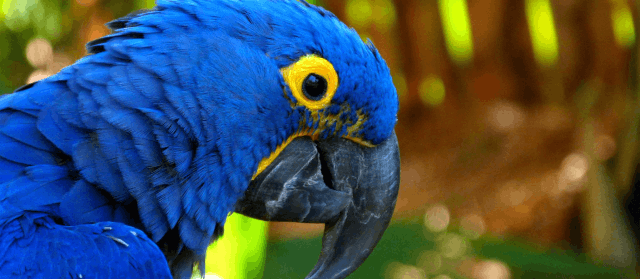A arara-azul encanta com suas cores vibrantes e seu canto alto. Vive em casais e depende de árvores antigas para fazer seus ninhos.
Ema
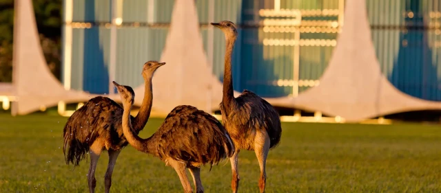A ema é a maior ave do Brasil. Não voa, mas corre com agilidade e é facilmente encontrada em campos abertos do Cerrado.
Paisagens Naturais
As paisagens do Cerrado encantam com sua diversidade: campos abertos, veredas, chapadas e formações rochosas que mudam de cor conforme o sol se move.
Veredas Buriti
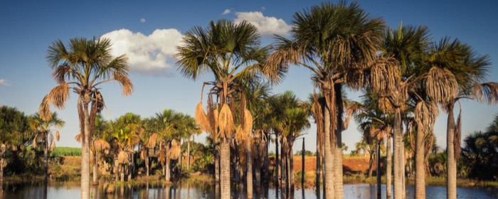O plantio de mudas nativas é uma das ações mais simples e eficazes para restaurar áreas degradadas do Cerrado.
Chapa dos Veadeiros
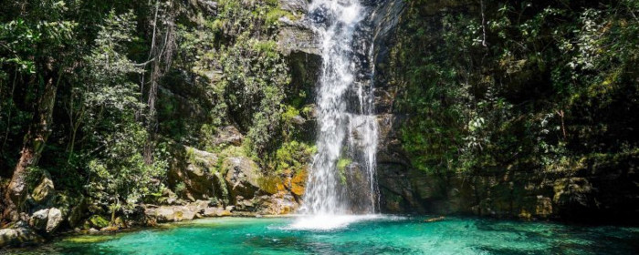A Chapada dos Veadeiros, em Goiás, é um santuário natural com cachoeiras, cânions e vegetação nativa protegida.
Jalapo
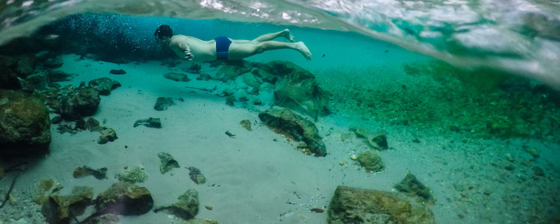O Jalapão, no Tocantins, é conhecido por suas paisagens de dunas douradas, fervedouros cristalinos e nascentes exuberantes.
Por do sol

Os pores do sol no Cerrado revelam tons alaranjados intensos, refletindo a beleza natural e a tranquilidade da região.